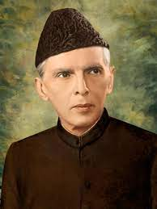

M. Ali Jinnah
1876-1948
Father of Pakistan
Muhammad Ali Jinnah born on 25 December 1876 - 11 September 1948) was a barrister, politician and the founder of Pakistan. Jinnah served as the leader of the All-India Muslim League from 1913 until the inception of Pakistan on 14 August 1947, and then as the Dominion of Pakistan's first governor-general until his death. He is revered in Pakistan as the Quaid-e-Azam ("Great Leader") and Baba-e-Qaum ("Father of the Nation"). His birthday is observed as a national holiday in Pakistan.
Biographies
- Bolith, Hector (1954). Jinnah: Creator of Pakistan. London: John Murray.
- Jinnah, Fatima (1987). My Brother. Quaid-i-Azam Academy.
- Cohen, Stephen Philip (2004). The Idea of Pakistan. Washington, D.C. Brookings Institution Press.
- Wolpert, Stanley (1984). Jinnah of Pakistan. New York: Oxford University Press.
- Puri, Balraj (7 March 2008). "Clues to understanding Jinnah". Economic and Political Weekly. Bombay: Sameeksha Trust